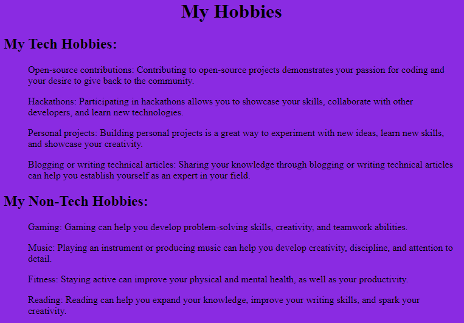

ODO, OSITA CHINEDUM
WEB DEVELOPER
Contact Address
Career Objective
I am a passionate web developer and I am aiming to work as a Full-Stack Web Developer to handle both front-end and back-end development, delivering comprehensive web solutions.
Iwould love to leverage my expertise in HTML, CSS, and JavaScript to develop visually appealing and highly functional websites and to contribute to a collaborative team environment, where I can learn from experienced professionals and apply my skills to deliver exceptional web solutions.
Education
- BASc Software Development
- Brigham Young University
- 02/11/2024 - 03/10/2027
- B.Pharm in Pharmacy
- University of Nigeria, Nsukka
- 02/09/2014 - 03/10/2019
Work Experience
Front-End Developer
Access Bank PLc
Key Responsibilities:
- Designed and developed user-friendly and visually appealing web interfaces for various Access Bank digital platforms, including online banking and mobile applications.
- Collaborated with UX/UI designers, backend developers, and product managers to ensure seamless integration of frontend components with backend services.
- Utilized HTML5, CSS3, and JavaScript to create responsive and cross-browser compatible web pages
- Implemented advanced JavaScript frameworks like ReactJS and AngularJS to build dynamic and interactive user experiences.
- Optimized website performance, ensuring fast loading times and smooth user interactions.
Achievements:
- Successfully implemented a new online banking feature that increased user engagement by 70% and reduced customer support inquiries.
- Optimized the mobile app's loading speed by [percentage], resulting in a significant improvement in user satisfaction.
- Contributed to the development of a responsive website design that increased website traffic by [percentage] on mobile devices.
- Successfully migrated legacy web applications to modern frameworks, enhancing performance and security.
Relevant Skills
- HTML, CSS, and JavaScript
- Front-end frameworks like React, Angular, or Vue.js
- CSS preprocessors like Sass or Less
- Responsive design and cross-browser compatibility
- APIs and RESTful architecture
- PostgreSQL,
- Node.js
- Git for managing code changes and collaboration and Writing unit tests and conducting browser testing
Awards and Certification
- The Complete 2024 Web Development Bootcamp
- 100-days of code: The complete python pto Bootcamp
Hobbies 
Contact Me